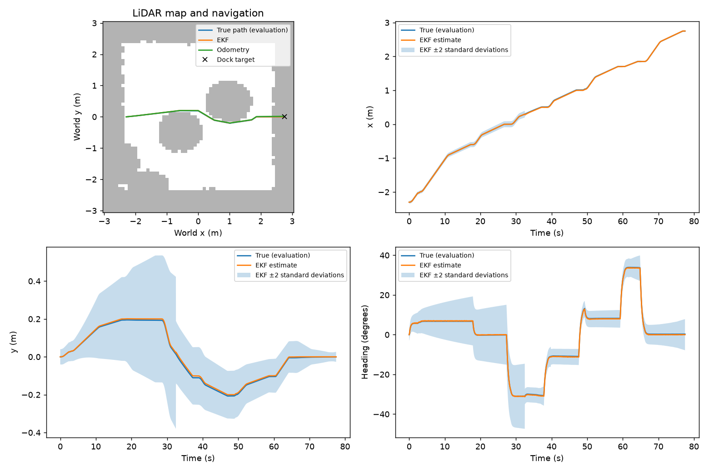
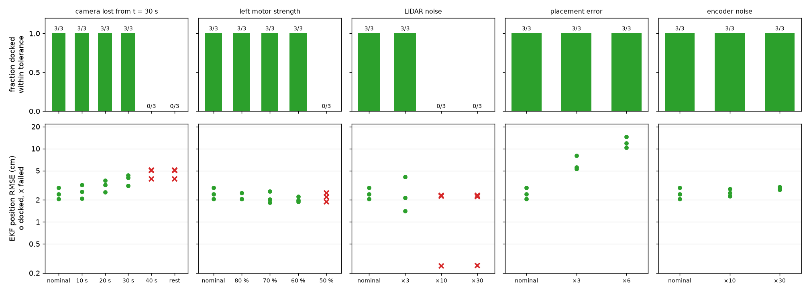
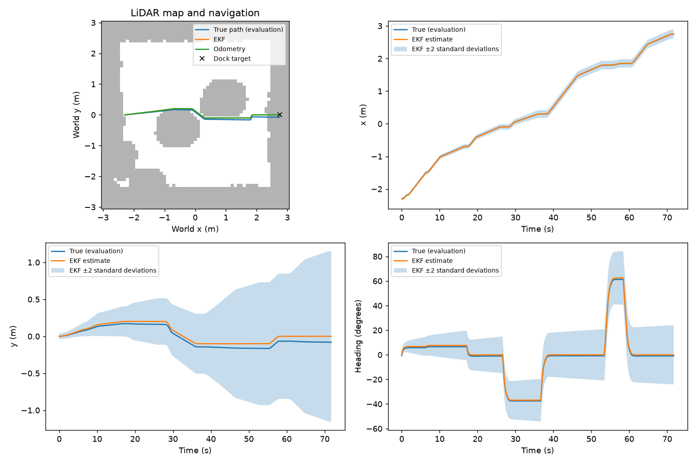
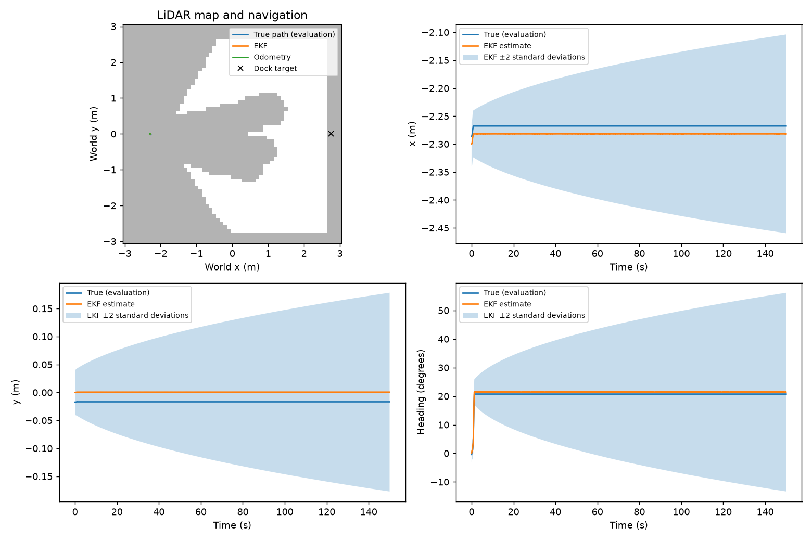

Demo video
[Replace every VIDEO_ID on this page with the video's YouTube ID (Ctrl+H in VS Code), then delete this line.]
Watch on YouTube (5 minutes). [One line on what the video shows, for example: a docking run, a disturbed run, and the EKF estimate with its ±2σ band next to the true pose.]
Overview
The robot starts in a 6 m × 6 m room with four boxes. It maps them with its 2D LiDAR, plans around them with A*, and docks in front of an ArUco-marked charging station. An EKF fuses wheel-encoder odometry with the camera's range and bearing to the marker, and an LQR tracker drives on the EKF's estimate. The simulator's true pose is only used to score runs.

Results at a glance
| What was tested | Result |
|---|---|
| Whole system, nominal: rendered camera, LiDAR map and A*, EKF and LQR; three starts × three seeds, each with a random 2 cm / 1.5° placement error the EKF isn't told about | 9/9 docked within 3 cm along, 2 cm sideways and 3° (worst 0.24 cm, 0.28 cm, 1.2°), no collisions. EKF position error 3.32 cm RMS against 8.95 cm for odometry alone (63 % less). |
| Robustness: camera loss, a weak motor, LiDAR noise, placement error and encoder noise, each pushed until it breaks; 16 disturbed conditions × 3 seeds | 33 of 48 docked. Copes with 30 s of camera loss, a left motor at 60 %, 3× the LiDAR noise, 6× the placement error and 30× the encoder noise. Fails with 40 s or more of camera loss, a 50 % motor and 10× the LiDAR noise, each traced to its cause. |
| Estimator (Part C): tuning on identical sensor logs, then fresh seeds | 9/9 fresh seeds docked; EKF error 3.60 cm RMS against 9.53 cm (62 % less), NEES 0.94 (conservative). Part B's measured R gave the same accuracy but could lock the camera out under disturbances, so the design values were kept. |
| Controller (Part D), on its own test routes | 90/90 docked with the fast camera stand-in and 30/30 with the rendered camera; docking error 0.06 ± 0.07 cm along, 0.01 ± 0.15 cm sideways, −0.07 ± 0.64° over the 90. |
| Camera (Part B) | Calibrated focal length within 0.1 px of the true value (0.097 px reprojection error); range bias about 10 mm and spread under 7 mm out to 2 m; measured R of 12.3 mm and 0.021°. |
| Model (Part A) | Within 1 cm and 1° of the MuJoCo robot over 1 m of travel or a full turn, once its floor contact is corrected (38 cm and 106° off without). |
Part A: model
The state is the robot's pose in the fixed room frame (origin at the room centre, x towards the dock), and the inputs are forward speed and turn rate. Robot numbers come from robotis_tb3/turtlebot3_waffle_pi.xml: wheel radius \(r = 0.033\) m, wheel separation \(L = 0.288\) m, wheel speed limit ±7.88 rad/s (top speed 0.26 m/s), and a model step of \(\Delta t = 0.02\) s. Full write-up: PART_A_MODELLING.md.
Motion model and its Jacobians (EKF)
\[ \dot x = v\cos\theta, \quad \dot y = v\sin\theta, \quad \dot\theta = \omega \qquad\Rightarrow\qquad \mathbf{x}_{k+1} = \mathbf{x}_k + \Delta t \begin{bmatrix} v_k\cos\theta_k \\ v_k\sin\theta_k \\ \omega_k \end{bmatrix} \] \[ F = \frac{\partial f}{\partial \mathbf{x}} = \begin{bmatrix} 1 & 0 & -v_k\Delta t\sin\theta_k \\ 0 & 1 & v_k\Delta t\cos\theta_k \\ 0 & 0 & 1 \end{bmatrix}, \qquad G = \frac{\partial f}{\partial \mathbf{u}} = \begin{bmatrix} \Delta t\cos\theta_k & 0 \\ \Delta t\sin\theta_k & 0 \\ 0 & \Delta t \end{bmatrix} \]Tracking-error model (LQR)
The error to the reference is rotated into the robot frame: \(e_x\) ahead, \(e_y\) to the left, \(e_\theta\) heading. Linearising about the reference speeds and dropping products of small terms gives
\[ \mathbf{e}_{k+1} = A\,\mathbf{e}_k + B\,\delta\mathbf{u}_k, \qquad A = \begin{bmatrix} 1 & \omega_{ref}\Delta t & 0 \\ -\omega_{ref}\Delta t & 1 & v_{ref}\Delta t \\ 0 & 0 & 1 \end{bmatrix}, \qquad B = \begin{bmatrix} -\Delta t & 0 \\ 0 & 0 \\ 0 & -\Delta t \end{bmatrix} \]Camera measurement model
\[ \mathbf{z} = h(\mathbf{x}) = \begin{bmatrix} \rho \\ \beta \end{bmatrix} = \begin{bmatrix} \sqrt{(m_x - x)^2 + (m_y - y)^2} \\ \operatorname{atan2}(m_y - y,\ m_x - x) - \theta \end{bmatrix}, \qquad H = \begin{bmatrix} -\frac{m_x - x}{\rho} & -\frac{m_y - y}{\rho} & 0 \\ \frac{m_y - y}{\rho^2} & -\frac{m_x - x}{\rho^2} & -1 \end{bmatrix} \]Assumptions
- Kinematic model. The wheel servos (velocity gain 5 in the XML) reach the commanded speed within about one step, so motor torque, wheel inertia and friction are left out.
- No wheel slip. This only holds once the floor contact is corrected; the model check below shows what happens without it.
- Flat floor and small errors. The error model also assumes reference speeds that are constant over one step.
Controllability and observability
| Check | Matrix | Rank | Meaning |
|---|---|---|---|
| Controllability, \(v_{ref} = 0.2\) m/s | \([B,\ AB,\ A^2B]\) | 3 | All three errors can be driven to zero. |
| Controllability, \(v_{ref} = 0\) | \([B,\ AB,\ A^2B]\) | 2 | A sideways error can't be fixed while stopped, so the robot corrects it on the approach and docks while still moving. |
| Observability, encoders only | \(C = 0\) | 0 | Odometry never measures the pose, so its error grows. |
| Observability, camera full pose | \(C = I_3\) | 3 | Would fix every state. |
| Observability, range and bearing (parked, moving or turning) | \([H_0;\ H_1F_0;\ H_2F_1F_0]\) | 2 | Circling the marker while turning by the same angle leaves both readings unchanged. The known start and odometry keep the local EKF working. |
Model check against MuJoCo
validatemodel.py drives the robot with fixed wheel speeds, integrates the model from the wheel encoders, and compares the result with the simulator's pose, which is read only to score the model.
| Manoeuvre | Robot as the XML loads: position, heading error | With the contact correction |
|---|---|---|
| Straight, 7.5 s | 15.0 cm, +0.7° | 0.4 cm, 0.0° |
| Spin on the spot, 9 s | 5.2 cm, +106.0° | 0.0 cm, +1.0° |
| Arc (left wheel 2, right 4 rad/s), 10 s | 38.1 cm, +58.5° | 0.8 cm, +0.9° |
As the XML loads, the robot travels 15 % less than its wheels say and turns about 30 % less: the chassis collision shape rests on the floor, and the casters take the floor's friction. sim.load() gives the casters contact priority and lifts the chassis shape 2 mm clear of the floor, and every part loads the scene through it. With the correction, the model matches MuJoCo within 1 cm and 1° over about 1 m of travel or a full turn; the EKF's Q covers what is left.
Part B: sensing and frames

A marker reading goes from the OpenCV camera frame (x right, y down, z forward) to the robot base, and the EKF's pose takes it on to the world. Full write-up: PART_B_SENSING.md.
\[ \mathbf{p}_B = R_{BC}\,\mathbf{p}_C + \mathbf{t}_C, \qquad R_{BC} = \begin{bmatrix} 0 & 0 & 1 \\ -1 & 0 & 0 \\ 0 & -1 & 0 \end{bmatrix}, \qquad \mathbf{t}_C = \begin{bmatrix} 0.07 \\ 0 \\ 0.15 \end{bmatrix}\ \text{m} \] \[ \rho = \sqrt{x_B^2 + y_B^2}, \qquad \beta = \operatorname{atan2}(y_B, x_B) \]| Sensor | Model in the code | Why |
|---|---|---|
| Wheel encoders, 50 Hz | Angle rounded to 4096 ticks per turn, plus Gaussian noise of one tick; differenced into \((v, \omega)\) with Part A's wheel conversion | The servo's resolution; the extra tick stands in for backlash and small slip |
| 2D LiDAR, 10 Hz | 36 beams every 10°, 0.12 to 3.5 m; σ = 7.5 mm below 0.5 m, else 2.5 % of the range; no return becomes 3.5 m | The LDS-01 datasheet's ±15 mm and ±5 %, read as two standard deviations |
| RGB camera, 10 Hz | 640 × 480 pinhole with a 60° vertical field of view, so f = 415.69 px | MuJoCo's camera; checked by calibration below |
| ArUco marker | DICT_4X4_50 id 0, 0.16 m black square, sub-pixel corners, pose from solvePnP (IPPE square) | The 0.20 m plate has a white border |
Rejected camera readings: a wrong marker id, a marker under 30 px a side (beyond about 2.2 m), a failed or non-finite PnP solve, or a pose behind the camera or past 3.5 m. The EKF's innovation gate is a second check.
Calibration
The project scene has no calibration target, so calib_scene.xml puts an 8 × 6 chessboard of 0.1 m squares in front of the same robot and camera. Photos from 27 poses (3 distances × 3 sideways offsets × 3 headings) went into cv2.calibrateCamera. All 27 were used, with a reprojection error of 0.097 px and every distortion coefficient under 0.003.
| Parameter | True K (pinhole) | Calibrated | Difference |
|---|---|---|---|
| \(f_x\) | 415.69 | 415.79 | +0.09 px |
| \(f_y\) | 415.69 | 415.77 | +0.08 px |
| \(c_x\) | 320.00 | 319.61 | −0.39 px |
| \(c_y\) | 240.00 | 239.34 | −0.66 px |
The focal length confirms the pinhole formula. The image centre moved by about half a pixel because pixel coordinates are measured at pixel centres, and that half pixel had been causing a bearing bias.
Measured camera noise and R
The robot was parked facing the marker at 1.0, 1.5 and 2.0 m, with 150 photos at each. The simulator is perfectly repeatable, so pixel noise (σ = 2 grey levels) and pose jitter (σ = 2 mm, 0.2°) were added. With the calibrated K:
| Distance | Seen | Range bias | Range σ | Bearing bias | Bearing σ |
|---|---|---|---|---|---|
| 1.0 m | 150/150 | 0.1 mm | 0.2 mm | 0.016° | 0.014° |
| 1.5 m | 150/150 | 4.6 mm | 2.9 mm | 0.015° | 0.006° |
| 2.0 m | 150/150 | 10.4 mm | 6.7 mm | 0.015° | 0.003° |
Range spread grows with the square of the distance, \(\sigma_d = \sigma_w d^2 / (f s)\), as the marker shrinks from about 66 px to 33 px wide. Bearing is far more precise: 0.003° at 2 m is about 0.1 mm sideways. Calibration cut the bearing bias from 0.066° to 0.015°. Taking the worst case, at 2 m, and folding the bias in gives Part B's measured R:
\[ R_{measured} = \operatorname{diag}\left(b_\rho^2 + \sigma_\rho^2,\ b_\beta^2 + \sigma_\beta^2\right) = \operatorname{diag}\left((12.3\ \text{mm})^2,\ (0.021^\circ)^2\right) \]Part C compared this measured R with its design R; its results explain why the pipeline keeps the design value.
Problems found and fixed
- Range 25 % too long (2.46 m against 1.89 m): the detected marker is the 0.16 m black square, not the 0.20 m plate, and the camera sits 0.07 m ahead of the base, not 0.086 m.
- Range biased long by up to 8.5 cm: ArUco corners snapped to whole pixels, so the marker could look about 1.5 px smaller than it is. Sub-pixel corner refinement cut the worst bias in the noise test from 34 mm to 10 mm, and the measured R from 38.5 mm to 12.3 mm.
- Calibration using 1 of 27 photos: MuJoCo drew the LiDAR rays across the chessboard. Making them transparent in the calibration scene fixed it.
Part C: estimation
An extended Kalman filter fuses wheel odometry (predict, 50 Hz) with range and bearing to the known marker (update, up to 10 Hz). It starts at the intended placement and is never told the real one. Full write-up: PART_C_ESTIMATION.md.
\[ \hat{\mathbf{x}}^- = f(\hat{\mathbf{x}}, \mathbf{u}, \Delta t), \qquad P^- = F P F^\top + Q\,\frac{\Delta t}{0.02\ \text{s}} \] \[ \boldsymbol\nu = \mathbf{z} - h(\hat{\mathbf{x}}^-), \qquad S = H P^- H^\top + R, \qquad K = P^- H^\top S^{-1}, \qquad \text{NIS} = \boldsymbol\nu^\top S^{-1} \boldsymbol\nu \] \[ \hat{\mathbf{x}} = \hat{\mathbf{x}}^- + K\boldsymbol\nu, \qquad P = (I - KH)\,P^-(I - KH)^\top + KRK^\top \]| Setting | Value | Reason |
|---|---|---|
| Q, per 20 ms | diag(1 mm, 1 mm, 0.2°)² | Motion the kinematic model misses; a design value |
| R, per reading (used) | diag(3 cm, 1°)² | Design value, kept after the study below |
| R, measured by Part B (compared) | diag(12.3 mm, 0.021°)² | Worst case of Part B's head-on noise test, bias included |
| Initial P | diag(2 cm, 2 cm, 1.5°)² | The placement error used in random trials |
| Gate | reject if NIS > 9.21 | 99 % chi-square bound for two measurements |
The bearing innovation is wrapped to [−π, π), the Joseph form keeps P positive definite, and linear solves replace matrix inverses. With no marker in view, the filter keeps predicting from odometry.
Tuning on identical sensor logs
Nine rendered-camera trials were driven with the design values and recorded: three from each start, the south ones with the left motor at 90 % and the camera off from 25 to 30 s. Their logs were then replayed through every setting, so each setting sees exactly the same inputs. A bad reading is a camera range more than 3 cm from the truth, scored afterwards: 10 of the 2438 readings, all 5–11 cm short and seen 10–23° off the camera axis.
| Setting | Position RMSE (cm) | Mean NEES | x inside ±2σ | Bad readings rejected | Good readings rejected |
|---|---|---|---|---|---|
| Design Q and R (used) | 3.71 | 0.67 | 100 % | 3 of 10 | 0 |
| Q ×0.1 | 3.64 | 1.76 | 95.8 % | 3 of 10 | 0 |
| Q ×10 | 3.74 | 0.19 | 100 % | 2 of 10 | 0 |
| R ×0.1 | 3.71 | 1.41 | 97.8 % | 10 of 10 | 0 |
| R ×10 | 3.71 | 0.42 | 100 % | 0 of 10 | 0 |
| Design Q, measured R | 3.71 | 1.45 | 98.5 % | 10 of 10 | 0 |
| Q ×0.1, measured R | 3.62 | 3.63 | 85.5 % | 10 of 10 | 0 |
| Odometry only | 9.80 | 0.42 | 100 % | – | – |
Accuracy hardly depends on Q and R. Every setting is within 0.1 cm of 3.7 cm, against 9.8 cm for odometry alone, because the error is decided before the first camera fix, 17–32 s into a run. On these nominal runs, smaller values describe the filter better: the design NEES of 0.67 against an ideal of 3 means the filter is conservative, and Part B's measured R rejects all ten bad readings while keeping all 2428 good ones.
Consistency against robustness: why the design values stay
Part E ran its robustness study with the measured R in the loop too. In one run with the left motor at 80 %, the very first camera reading was a bad one: 10 cm short, seen 25° off the axis. The estimate was still uncertain, so the gate let it in, and with an R that small the update dragged the estimate 9 cm out and collapsed its covariance around the wrong place. The gate then rejected every good reading for 29 s, 278 of them. The design R took the same reading with less weight and was back within 3 cm two seconds later.
| Setting, replayed on the 57 robustness runs | Position RMSE (cm) | Mean NEES | Bad readings rejected | Good readings rejected |
|---|---|---|---|---|
| Design Q and R (used) | 3.52 | 0.84 | 52 of 103 | 0 |
| Design Q, measured R (driven live) | 3.64 | 1.71 | 96 of 103 | 374 |
| Q ×0.1 | 3.53 | 2.47 | 51 of 103 | 311 |
| Q ×0.1, measured R | 3.54 | 4.74 | 100 of 103 | 725 |
Decision: the design Q and R. Accuracy is the same for every setting, and the design values never rejected a good reading in any of the tuning, validation or robustness runs, so the pipeline accepts a conservative NEES as the price. On the real robot, Part B's measured R would be the starting point, with a guard that re-opens the gate when several readings agree with each other but not with the estimate.
Fresh-seed validation
The same three scenarios with fresh seeds, driven twice in closed loop: once with the chosen settings and once with the measured R, from the same placement errors and sensor noise.
| Design Q and R (used) | Design Q, measured R | |
|---|---|---|
| Docked within tolerance, no collisions | 9/9 | 9/9 |
| EKF position RMSE (cm) | 3.60 | 3.64 |
| Odometry-only RMSE (cm) | 9.53 | 9.54 |
| Mean NEES | 0.94 | 1.74 |
| Inside ±2σ, x / y / heading | 100 / 99.6 / 99.8 % | 97.8 / 99.6 / 99.8 % |
| Bad readings rejected by the live gate | 10 of 21 | 32 of 34 |
| Good readings rejected | 0 | 0 |
| Worst final error: along / sideways / heading | 0.42 cm / 0.24 cm / 0.98° | 0.41 cm / 0.24 cm / 0.95° |
With the chosen settings the EKF's position error is 62 % below odometry overall, and lower in all nine runs: west 2.67 against 6.48 cm, north 4.66 against 13.30 cm, and 3.47 against 8.80 cm in the south runs with the weak motor and the camera gap.

Part D: control
A discrete LQR tracker drives each planned leg and the dock approach, using only the EKF estimate. Full write-up: PART_D_CONTROL.md.
\[ \mathbf{u} = \mathbf{u}_{ref} - K(v_{ref}, \omega_{ref})\,\mathbf{e} \] \[ K = \left(R_u + B^\top P B\right)^{-1} B^\top P A, \qquad P = A^\top P A - A^\top P B\,K + Q_e \]| Weight (Bryson's rule, 1 / largest²) | Largest acceptable value | Why |
|---|---|---|
| \(e_x\), along the path | 0.10 m | Running a little late is harmless |
| \(e_y\), across the path | 0.05 m | About 0.25 m to the boxes, and docking needs it centred |
| \(e_\theta\), heading | 10° | |
| \(\delta v\), extra speed | 0.10 m/s | Cruise 0.15 m/s, top speed 0.26 m/s |
| \(\delta\omega\), extra turn rate | 0.60 rad/s | At 0.15 m/s a wheel saturates past 0.76 rad/s |
- Gains. On a straight at 0.15 m/s: \(\delta v = 0.99\,e_x\) and \(\delta\omega = 11.5\,e_y + 3.8\,e_\theta\). Time constants are 1.0 s along the path, 0.30 s in heading and 1.9 s sideways.
- Gain schedule. K is re-solved for the plan's \((v_{ref}, \omega_{ref})\), never for less than 0.05 m/s, because the sideways error is uncontrollable at a standstill. In the 0.25 m corners its slowest time constant is 1.19 s, against 1.46 s for one fixed gain.
- Reference and feedforward. Cruise 0.15 m/s, acceleration 0.15 m/s², at most 70 % of wheel speed in the plan so 30 % is left for feedback, and 0.05 m/s for the last 0.30 m. On curved routes the turn rate is fed forward as \(\omega_{ref} = v_{ref}\,\kappa\).
- Wheel limits. If either wheel would pass 95 % of 7.88 rad/s, both are scaled by the same factor, so the robot keeps its curve and slows down.
- Docking. A 0.90 m straight along the marker's normal, stopping 5 cm from the marker face. "Docked" means \(|e_x| < 1\) cm and \(|e_\theta| < 2°\) for 0.5 s, judged from the estimate. A robot starting more than 15° off its first leg turns on the spot first.
- No integral action. A constant turn-rate disturbance d leaves a sideways offset of \(d / k_y\). For a left motor at 90 % and 80 % this predicts 5.0 mm and 11.3 mm; MuJoCo gave 5.0 mm and 11.2 mm. Integral action would remove it but winds up during the EKF's large corrections.
Results on the Part D test bench
These trials use run_tracking.py on three smooth hand-planned routes (slalom, north and south), each with a random 2 cm / 1.5° placement error. The batch uses a fast camera stand-in with σ = 2 mm + 1 % of range and 0.5°, larger than Part B measured, checked below against the rendered camera. The final pipeline drives A* legs instead (Part E).
| 90 random trials in MuJoCo | Mean | SD | Worst |
|---|---|---|---|
| Docked within tolerance, no collisions | 90 / 90 | ||
| RMS cross-track error, true (cm) | 3.66 | 1.97 | 9.60 |
| RMS cross-track error the controller sees (cm) | 0.92 | 0.61 | 2.65 |
| EKF position error, RMS (cm) | 4.14 | 1.90 | 10.51 |
| Dock error along (cm) | 0.06 | 0.07 | 0.25 |
| Dock error sideways (cm) | 0.01 | 0.15 | 0.40 |
| Dock heading error (°) | −0.07 | 0.64 | 1.56 |
| Time to dock (s) | 46.1 | 3.6 | 51.0 |
The controller holds what it sees to 0.9 cm. The true error is four times larger and almost all of it is estimation error: the camera only sees the dock from about 2.2 m, so the first 3–4 m of every route run on odometry alone. Docking is accurate because the final 0.9 m has camera fixes all the way in. With the rendered camera the same 30 starts all docked, with 2.53 cm true error against 3.08 cm for the stand-in: the real detector finds the marker sooner, so the stand-in is slightly pessimistic.
| Design comparison (30 runs, same seeds) | Docked | RMS \(e_y\) true (cm) | RMS \(e_y\) seen (cm) | RMS feedback ω (rad/s) |
|---|---|---|---|---|
| Final: scheduled LQR + feedforward | 30/30 | 2.92 | 0.77 | 0.031 |
| One fixed gain (straight line, 0.15 m/s) | 30/30 | 2.93 | 0.78 | 0.037 |
| No turn-rate feedforward | 30/30 | 3.02 | 1.09 | 0.085 |
Feedforward matters most: without it the error the controller sees is 40 % bigger and the feedback effort 2.7 times higher. Scheduling saves about 16 % of the feedback effort.

| R scale | 0.01 | 0.1 | 1 (final) | 10 | 30 |
|---|---|---|---|---|---|
| RMS \(e_y\) true (cm) | 2.57 | 2.53 | 2.56 | 2.62 | 2.67 |
| RMS wheel acceleration (rad/s²) | 13.9 | 8.7 | 6.7 | 6.0 | 5.9 |
| Steps with a wheel at its limit (%) | 1.13 | 0.52 | 0.06 | 0 | 0 |
A controller 100 times more aggressive than the Bryson design doesn't reduce the true error (2.56 to 2.57 cm): it doubles the wheel acceleration and hits the wheel limit 18 times as often. The true error is capped by the estimate, not the gains, so what limits the gains is the wheel speed limit and the EKF's corrections, which a high-gain controller turns straight into wheel jerks.
| Left motor | Docked | Dock sideways (cm) | RMS feedback ω (rad/s) |
|---|---|---|---|
| 100 % | 30/30 | 0.08 ± 0.13 | 0.025 |
| 90 % | 30/30 | −0.20 ± 0.14 | 0.061 |
| 80 % | 30/30 | −0.54 ± 0.15 | 0.123 |

Part E: integration and robustness
One loop joins the rendered camera and LiDAR, Part B's sensing, Part A's model, Part C's EKF and Part D's LQR. The map is a 0.10 m grid of the known 6 × 6 m room, built from LiDAR endpoints placed with the estimated pose, and each endpoint blocks cells within 0.40 m. A* plans to a pre-dock point 0.9 m in front of the dock, and line-of-sight simplification leaves a few waypoints. The LQR follows one straight leg at a time and re-plans when a new scan blocks the leg; a 0.15 m start allowance lets the robot leave the margin around itself. The last 0.9 m is Part D's straight approach along the marker's normal. Full write-up: PART_E_INTEGRATION.md.
A trial ends when the robot docks, the tracker times out, or 150 s pass. Success means docked with the true final pose within 3 cm along the dock axis, 2 cm sideways and 3°, with no contact with a box.
Nominal trials
Three trials from each start, each with a random 2 cm / 1.5° placement error the EKF isn't told about.
| Start | Docked | EKF RMSE (cm) | Odometry RMSE (cm) | Mean NEES | Worst final error: along / sideways / heading | Time to dock (s) | Camera fixes per run |
|---|---|---|---|---|---|---|---|
| West | 3/3 | 2.46 | 4.63 | 0.55 | 0.24 cm / 0.11 cm / 0.55° | 74 | 333 |
| North | 3/3 | 2.81 | 7.16 | 0.56 | 0.24 cm / 0.08 cm / 0.43° | 67 | 320 |
| South | 3/3 | 4.69 | 15.06 | 0.83 | 0.24 cm / 0.28 cm / 1.22° | 44 | 175 |
All nine docked with no collisions. The EKF's position error is 63 % below odometry (3.32 against 8.95 cm RMS), and its NEES of about 0.6 is conservative, as Part C chose. Most of the error comes before the first camera fix, 17–37 s into a run: two south runs were 17–18 cm out just before it, and after it every run stays under 2.5 cm RMS.

python main.py: the west start with an exact placement. It docks at 77.5 s, 0.24 cm short along the dock axis, 0.03 cm sideways and 0.27° off, with an EKF error of 0.9 cm RMS. Top left, the path on the LiDAR map; the other panels show each state's estimate and ±2σ band next to the truth.Robustness study
Each condition changes one thing from the nominal west trial and runs the same three seeds, each with the usual placement error, so every level faces the same starts. Each disturbance was pushed until docking failed. Noise levels multiply Part B's models, and the camera is cut from t = 30 s because from the west start it first sees the marker 33–37 s in.
| Disturbance | Still docks at | Fails at | How it fails | Where the cause is |
|---|---|---|---|---|
| Camera lost from t = 30 s | 30 s of loss | 40 s or for the rest of the run | Docks on odometry alone, 5.4–8.0 cm sideways | Estimation: no absolute fix, and docking ignores the covariance |
| Left motor weak | 60 % | 50 % | Docks 2.3–2.4 cm sideways | Control: steady offset without integral action |
| LiDAR noise | ×3 | ×10 and ×30 | Never leaves the start | Mapping: noise becomes obstacles that block every path |
| Placement error | ×6 (12 cm and 9°) | not reached | – | – |
| Encoder noise | ×30 | not reached | – | – |

Every run, condition by condition (three seeds per level)
| Condition | Level | Docked | EKF RMSE (cm) | Odometry RMSE (cm) | Mean NEES | Sideways at the dock (cm) | Camera readings rejected per run |
|---|---|---|---|---|---|---|---|
| nominal | west | 3/3 | 2.46 | 4.63 | 0.55 | 0.09 | 1 |
| nominal | north | 3/3 | 2.81 | 7.16 | 0.56 | 0.04 | 2 |
| nominal | south | 3/3 | 4.69 | 15.06 | 0.83 | 0.19 | 0 |
| camera lost from t = 30 s | 10 s | 3/3 | 2.62 | 4.16 | 0.47 | 0.08 | 1 |
| camera lost from t = 30 s | 20 s | 3/3 | 3.13 | 4.68 | 0.20 | 0.06 | 0 |
| camera lost from t = 30 s | 30 s | 3/3 | 3.81 | 4.68 | 0.21 | 0.27 | 0 |
| camera lost from t = 30 s | 40 s | 0/3 | 4.66 | 4.66 | 0.22 | 6.87 | 0 |
| camera lost from t = 30 s | rest of run | 0/3 | 4.66 | 4.66 | 0.22 | 6.87 | 0 |
| left motor strength | 80 % | 3/3 | 2.20 | 4.30 | 0.69 | 0.48 | 3 |
| left motor strength | 70 % | 3/3 | 2.16 | 3.98 | 0.73 | 0.90 | 1 |
| left motor strength | 60 % | 3/3 | 2.02 | 3.65 | 0.66 | 1.40 | 2 |
| left motor strength | 50 % | 0/3 | 2.18 | 3.66 | 0.66 | 2.34 | 3 |
| LiDAR noise | ×3 | 3/3 | 2.56 | 4.98 | 0.35 | 0.03 | 1 |
| LiDAR noise | ×10 | 0/3 | 1.60 | 1.60 | 0.15 | – | 0 |
| LiDAR noise | ×30 | 0/3 | 1.59 | 1.59 | 0.14 | – | 0 |
| placement error | ×3 | 3/3 | 6.30 | 12.91 | 1.77 | 0.21 | 0 |
| placement error | ×6 | 3/3 | 12.28 | 23.66 | 6.25 | 0.35 | 0 |
| encoder noise | ×10 | 3/3 | 2.52 | 4.87 | 0.63 | 0.08 | 2 |
| encoder noise | ×30 | 3/3 | 2.86 | 5.55 | 0.90 | 0.11 | 2 |
Where it breaks, and why
Camera loss. From the west start the marker is in view from 33–37 s until about 2 s before the robot stops. With 30 s of loss the camera comes back at 60 s, which gives about 90 fixes, and the robot docks within 0.4 cm sideways. With 40 s of loss it gets no fix at all, so it docks on odometry alone and stops 5.4–8.0 cm to the side. The EKF knew it was lost: its sideways ±2σ band had grown to ±1.2 m. The fault is in the docking rule, which trusts the estimate however large its covariance; refusing to dock, or turning to look for the marker, would turn a silent miss into a detected one.
Weak motor. The EKF sees a weak motor through the encoders, and the robot still docks with the left motor at 60 %. The sideways offset at the dock grows with the imbalance (0.5, 0.9 and 1.4 cm at 80, 70 and 60 %) and reaches 2.3–2.4 cm at 50 %, past the 2 cm tolerance. That is the steady offset a controller without integral action leaves. The EKF's final estimate matched the true offset within 0.15 cm, so the estimator was not the problem.
LiDAR noise. At ten times Part B's noise, beam endpoints land far from any surface. Each is inflated by 0.40 m and the map never clears a cell, so within a few scans phantom obstacles close every path. The robot waits out the 150 s limit 5 m from the dock while the EKF holds 1.6 cm RMS, so the cause is the mapping. Marking a cell only after repeated hits, and clearing cells that later beams pass through, would tolerate far more noise.
Placement error and encoder noise didn't stop it at the levels tested. With six times the placement error the first camera fix pulls the estimate in and the robot docks within 0.4 cm sideways, although the EKF is overconfident before that fix (mean NEES 6.3) because it still starts with 2 cm and 1.5° of uncertainty.




The same study with Part B's measured R
The whole study was also run with Part B's measured R in the EKF. It docked in 42 of 57 runs, the same as with the design R, and failed in the same conditions for the same reasons. The difference was in the weak-motor runs: in one 80 % run and one 70 % run, a bad first camera reading got through the gate and shut the camera out for 29 s and 8 s. At 80 % those runs rejected 99 camera readings each on average, against 3 with the design R, and the EKF error was 3.6 cm against 2.2 cm.
Limits
- One marker gives range and bearing only, so a rotation about the marker is unobservable; a second landmark or the marker's orientation would remove it.
- The docking rule trusts the estimate whatever its covariance, as the camera-loss runs show.
- There is no integral action, so a motor that keeps less than about half its strength leaves the robot more than 2 cm to the side of the dock.
- Unknown space counts as free, and the map never clears old hits, so large drift, moving obstacles or a much noisier LiDAR make it conservative. The final 0.9 m straight assumes the dock corridor is clear.
- Q and R are design values tuned and checked in simulation, with Part B's measured R as the comparison; neither has been checked on a real robot.
- Three seeds per level show where each failure starts, not how often it happens near that level.
Ground truth is only used for evaluation
The controller and the EKF never receive the simulator's true pose. Where it is read, and how that is checked:
part_e_integration/pipeline.py:run_trial()logssimulator.truth()andsimulator.collided()after each step's commands are computed, for scoring and plots.Pipeline.step()takes only wheel angles, the time, a LiDAR scan and an image.part_d_control/run_tracking.py: the test bench's referee scores runs and stops a run if the robot hits a box.- Offline experiments place the robot themselves and compare with that pose: Part B's calibration and noise measurement, and Part A's model check.
- Checks.
test_pipeline.pyruns the integrated pipeline twice, the second time withtruth()returning NaN, and the wheel commands are identical; it also scans the code that runs inside the loop for any use of the simulator.test_controller.pydoes the same leak check on the controller, and plants a deliberate leak to show the check can fail.
The slipping robot shows it from the other side. With the robot exactly as the XML loads, before the floor-contact correction, the controller kept its estimate on the plan while the real robot ended up as far as 3.2 m from the dock, and in 84 of 90 runs it stopped and called itself docked. A controller reading the true pose would have steered back.

Code and how to run it
Repository: github.com/An-dre/41014-Sensors-and-Control-in-Mechatronics-Systems-Assessment-4-Integrated-Project. You need Python 3.12 or newer (tested on 3.12 and 3.15). The pinned packages have wheels for Windows, Linux and Apple-silicon Macs. On Windows (PowerShell):
git clone https://github.com/An-dre/41014-Sensors-and-Control-in-Mechatronics-Systems-Assessment-4-Integrated-Project.git
cd 41014-Sensors-and-Control-in-Mechatronics-Systems-Assessment-4-Integrated-Project
python -m venv .venv
.venv\Scripts\Activate.ps1
python -m pip install -r requirements.txt
python main.py # the whole system: one docking run from the west start (about 3 minutes)
python main.py --viewer # the same run, watched in the MuJoCo viewer
python -m unittest -v # all 32 checks for Parts C, D and E (under a minute)On macOS or Linux, use python3 -m venv .venv and source .venv/bin/activate. A run prints a line such as west_seed0: docked, success=True, EKF RMSE=0.9 cm, camera fixes=372, replans=10 and saves a log, a JSON summary and a plot in part_e_integration/results_pipeline/. python main.py --help lists the other starts, repeated trials, a weak motor, camera loss and the noise settings. The README lists the command behind every result on this page.
| Folder | Part | Owner |
|---|---|---|
main.py | The file to run (code in part_e_integration/pipeline.py) | — |
part_a_modelling/ | A Modelling | Gabriel Surya |
part_b_sensing/ | B Sensing, frame diagram | Dinel Atapattu |
part_c_estimation/ | C Estimation | Abdurehman Nasir |
part_d_control/ | D Control | Andre Arredondo |
part_e_integration/ | E Integration and robustness | Abdurehman Nasir, then Andre Arredondo |
robotis_tb3/ | Robot model and scene | shared |
Individual contributions
| Member | Contribution |
|---|---|
| Gabriel Surya | Part A, modelling: unicycle model, Jacobians, LQR error model, measurement model, controllability and observability analysis. Made the demo video. |
| Dinel Atapattu | Part B, sensing: encoder and LiDAR noise models, camera calibration in simulation, ArUco detection and frame conversion, measured camera noise R. |
| Abdurehman Nasir (Abdul) | Part C, estimation: the EKF, its noise tuning and consistency study. Part E, integration (first version): simulator interface, sensor adapter, LiDAR map and A* planner, the integrated pipeline. |
| Andre Arredondo | Part D, control: LQR trajectory tracker, docking logic and its closed-loop test bench. Part E, integration (final version): robustness study, final integration and repository. Project page. |
Generative AI declaration
| Tool | Purpose |
|---|---|
| Claude (Anthropic) | Part D: designing, coding and testing the LQR tracker, its test bench and its write-up. Part B: help to design, debug and test the sensing code and its write-up. Final pass over the whole repository: folder structure and imports, updating the packages, the corner-refinement fix found while checking Part B, the Part A model check, Part C's camera-gate and lock-out analysis behind the final noise choice, the Part E robustness study, re-running every experiment, and editing the write-ups and the README. Across the team: explaining concepts, debugging code, diagnosing simulator errors, and formatting this project page. |
| OpenAI Codex | Part C: implementation, tests, evaluation tooling, running the experiments and documentation. Part E, first version: integrating the parts into the shared pipeline, its tests and documentation. |
All AI suggestions were reviewed before use. We ran and tested the code ourselves, checked the results against the simulator, and made our own decisions on parameters and design choices. Every member can explain the code and results of their part. All reported numbers come from running the code in the repository; the final re-runs were made with Claude's help on 5–6 November 2026.
Acknowledgements
- Robot model: TurtleBot3 Waffle Pi by ROBOTIS, from MuJoCo Menagerie, Apache License 2.0 (
robotis_tb3/LICENSE). The room, boxes, dock, marker, sensors and calibration board were added by the team. - The 41014 weekly tutorials were the starting point: encoder, odometry and range/bearing models (Week 2), camera model, calibration and ArUco pose with PnP (Week 3), state-space models (Week 5), discrete LQR (Week 6) and the EKF (Week 7).
- Libraries: MuJoCo, OpenCV (ArUco,
solvePnP,calibrateCamera), NumPy, SciPy (solve_discrete_are) and Matplotlib.